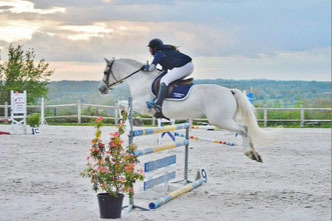

Recherche 2 poneys taille 1m45 à 1m49 ferré. Nous étudierons toute proposition répondant aux
critères:
- une femelle 5 ans, bien née, BPO > + 10, à fort potentiel, pour valorisation Cycles Classiques
CSO.
- un hongre ou une femelle, 7 à 12 ans, pratique, pour débuter de suite sur PElite, évolutif As2.
Maison 5*. Budget < 12000€.
Reprise des concours pour Paps Late
La saison de monte est déjà bien avancée. Les ponettes accueillies en monte en main à l'élevage ont
été honorées avec efficacité!
Avec la reprise des concours, Paps Late a retrouvé Oscar son cavalier avec réussite, puisqu'ils
terminent 2ème à l'issue du barrage de l'As Poney 1 Grand Prix de la TDA de Pompadour.
Paps Late reste disponible en IAC pour cette fin de saison, avec une offre génétique 100% au poulain
vivant et une semence d'excellente qualité!!
N'hésitez pas à nous consulter.
Reprise des concours pour Paps Late
Laissez-vous tenter en 2021:
- il est beau,
- il est bon avec un caractère irréprochable qu'il transmet,
- a production confirme ses qualités de père,
- sa semence est d'excellente qualité et vous est proposée à des conditions avantageuses grâce au
contrat "objectif fertilité".
Monte 2021: Objectif fertilité

Petite réflexion d'automne.
Rapide historique concernant l'utilisation de l'insémination artificielle en semence congelée chez
les chevaux... et donc les poneys!
En France, la monte artificielle a été autorisée pour l'espèce équine en 1986. Elle s'est développée
après 1990, l'IAC ayant connu un développement exponentiel après 1993: on est passé de 33 IAC en
1992 à plus de 8000 en 2018 (source annuaire Ecus 2019)!
Le protocole pour optimiser la fertilité en IAC préconisait : 8 paillettes de chacune 50 millions de
spermatozoïdes soit 400 millions de spermatozoïdes par dose d'insémination. Avec parfois 2 IA par
cycle (Vidament, 2005). Pour un objectif de fertilité de 45% par cycle.
Les pratiques ont évolué: aujourd'hui on insémine souvent avec seulement 4 paillettes, voir parfois
une seule, beaucoup d'étalons étant commercialisés avec une quantité de semence limitée.
J'ai fait un peu de biblio dans les publications des Haras Nationaux principalement.
Ce que j'en retiens:
- CERTES la fertilité à l'IA est fonction
- de l'étalon
- de l'éjaculat
- de la technique de monte
- du nombre d'inséminations pratiquées
- de l'intervalle dernière insémination-ovulation (les spermatozoïdes ayant une durée de vie de
12h
- après décongélation, il est essentiel d'inséminer au plus proche possible de l'ovulation)
de la jument
MAIS la fertilité est AUSSI dépendante du nombre de spermatozoïdes inséminés.
Aujourd'hui suivi ovarien rapproché et induction de l'ovulation sont des facteurs de réussite
indispensable à l'IAC avec une quantité de paillettes restreinte.
Ce qui j'y vois comme conséquences en tant que propriétaire de juments:
- je passe trop de temps à promener mes juments au printemps pour des suivis ovariens presque
quotidiens en fin de chaleur
- l'induction des ovulations me pose problème
Lecture d'un résultat d 'enquête pratiquée dans le cadre d'une thèse à l'école vétérinaire de
Toulouse (Pratique de l'insémination artificielle chez la jument en France. Suzy Loigerot, 2017),
auprès de vétérinaires pratiquant l'IA dans l'espèce équine: presque 43% des vétérinaires interrogés
recourent à l'induction de l'ovulation de façon systématique!
Bien sur un bon vétérinaire va regarder avant de déclencher l'ovulation la taille du follicule, si
l'utérus de la jument est infiltré, l'aspect du col.
MAIS mon interrogation grandit quand mon étalon Paps Late, qui est un excellent souffleur, me dit
que non ce n'est pas encore tout à fait le moment alors que tous les voyants sont au vert pour mon
inséminateur!
Et QUID sur du long terme du développement possible d' une immunité anti-hCG suite à l'utilisation
du chorulon, inhibant ainsi son action, sur les vieilles juments ou les juments traitées plusieurs
fois au cours d'un cycle pour induire l'ovulation?
Il y a bien des espèces (les chèvres par exemple), où on limite le nombre de traitement dans la
carrière de l'animal pour optimiser les résultats de fertilité. Chez les juments on en parle peu.
Je reste évidemment convaincue de l'intérêt de l'IAC en élevage, mais j'ai l'impression que
privilégier la quantité de semence disponible reste le meilleur levier pour améliorer la fertilité
pour nous éleveurs.
Pour cette raison Paps Late sera proposé en 2021 en IAC, avec un contrat de 3 doses de 8 paillettes.
J'entends déjà les mauvaises langues dire... 24 paillettes,... c'est qu'il n'est pas fertile...
euh... non! Fin de la discussion